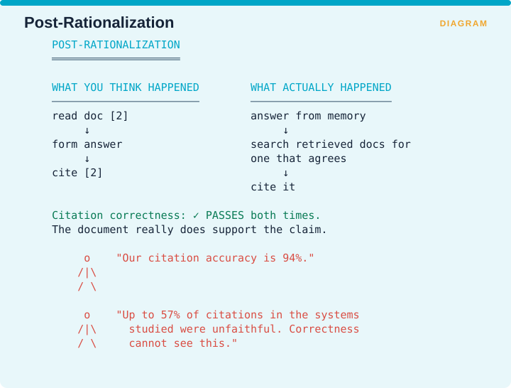

Measuring Retrieval › C.6 Citation correctness ≠ citation faithfulness
One-line: Citation support and genuine source use are separate properties. A model can attach a supporting citation after generating the claim.
Facets: Correctness | claim | judge | G | EMERGING VERIFIED Source: Wallat, Heuss, de Rijke & Anand · arXiv:2412.18004
ALCE checks whether the cited document supports the sentence, and a document can support a sentence the model never read. That leaves a gap between a citation being correct and a citation being honest, and the gap is large enough to matter.
The paper’s contribution is to separate two notions that earlier work had been using interchangeably. Citation correctness asks whether the cited document supports the statement. Citation faithfulness asks whether the model actually relied on that document when producing the statement.
They name the failure post-rationalization, where the model produces an answer from its own memory and then attaches a citation that happens to agree with it.

The figure contrasts what you assume happened with what may have happened. The assumed sequence is that the model read document [2], formed its answer from it, and cited it. The alternative sequence is that the model answered from memory, searched the retrieved documents for one that agreed, and cited that.
Citation correctness passes in both cases, because the document really does support the claim. So a team reporting 94% citation accuracy has measured something real and has not measured this. The paper reports that up to 57% of citations in the systems studied were unfaithful, and correctness cannot see any of them.
Notice the convergence across three independent papers.
| Paper | Name | Finding |
|---|---|---|
| RAG-X | Lucky Guess / Adherence Paradox | 33.9% correct and ungrounded; adherence 0.84 |
| RAGChecker | Self-Knowledge | Correct claims not entailed by context |
| Wallat et al. | Post-rationalization | Up to 57% of citations unfaithful |
Three research groups, three vocabularies, one failure mode: the system looks grounded and is not. If you take one thing from this supplement, take that.
If you ship citations, measure both citation faithfulness and citation correctness. The cheapest approximation is a counterfactual check run on a sample, where you remove the cited document, re-run the query, and see whether the answer changes. If the answer does not change, the citation was decorative.
That is the same ablation logic as the contribution family in Supplement A, applied to citations rather than to passages.
Measuring Retrieval · Madhava Gaikwad · First edition, September 2026